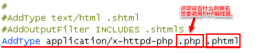

文件上传漏洞
文件上传漏洞是由于客户端和服务器端对上传文件的类型和内容未做严格的检测，导致攻击者可以上传包含可执行脚本代码的文件，并且能够执行脚本代码。攻击成功的因素：
（1）上传了含有脚本代码的文件；
（2）能够执行脚本代码。
上传文件的信息
在服务器端，$_FILES用于存储有关文件的信息，相关属性如下：
array(1) {
["arr"]=> // <input>的name属性值
array(5) {
["name"]=> // http请求报文中的filename值
string(9) "shell.jpg"
["type"]=> // http请求报文中的Content-Type
string(10) "image/jpeg"
["tmp_name"]=> // 系统默认临时路径，除非修改php.ini的upload_tmp-dir
string(22) "C:\Windows\phpBE20.tmp"
["error"]=> // 错误代码
int(0)
["size"]=> // 文件大小
int(60)
}
}
上传脚本的绕过技巧
（1）修改客户端的代码就可以突破限制。（针对客户端检测机制）
（2）修改http头Content-Type值。（服务器端检测$_FILES['arr']['type']值）
（3）后缀名改为.php3、.php4或.phtml等等。能够成功执行取决于服务器端的httpd-conf配置：

（4）后缀名大小写。
（5）filename值后面添加"."或" "(空格)，这两个字符在文件系统中会被去掉，但是在PHP代码里仍然存在。因此，如果检测filename值的合法性，同时又以filename值重命名临时文件时，就可以利用 这一点绕过一些检测。
（6）在filename值后面添加"::$DATA"。
（7）双写绕过。（注意函数str_ireplace()）
（8）$_GET和$_POST可以接收%00，而move_uploaded_file()函数在写入文件时，文件名遇到%00就会停止。因此，在拼接路径时，如果能够控制某部分路径参数，就可以利用%00截断后面的路径， 从而写入到任意目录下，以及命名任意文件名。

注意：$_FILES['filename']['name']不能存储%00，所以不能利用它截断。GET方式接收%00时，需要的条件是PHP版本<5.3.4和magic_quotes_gpc为off（默认为on）。
上传图片马的绕过技巧
（1）先上传.htaccess文件，再上传图片马。.htaccess是配置文件，相当于httpd-conf，利用它可以修改当前目录以及子目录下的配置。通过修改httpd-conf的AllowOverride选项就可以启动.htaccess文件。

攻击过程，.htaccess文件的内容：

上传.htaccess文件后，再上传含有脚本代码的图片。在访问图片时，就可以执行里面的脚本了。
（2）读写图片内容的前几个字节，验证是否为合法的图片类型。在图片马里添加相关图片类型的字节即可绕过。
（3）获取图片格式函数：
getimagesize($img_path) // getimagesize()读取图片信息，返回结果是一个数组， 索引 2 给出的是图像的类型，返回的是数字，其中1 = GIF，2 = JPG，3 = PNG等等。
image_type_to_extension(int) // 根据数字返回对应的图片格式后缀名
exif_imagetype() //返回值为图片类型后缀名的常量。例如IMAGETYPE_GIF的值为.gif。需要PHP开启配置"extension=php_exif.dll"（默认关闭）
如果利用这两个函数对上传的文件验证是否为图片格式，就直接在图片马前面添加图片固定的字节即可。
（4）图片渲染函数：
imagecreatefromgif($target_path); // 渲染是对图片内容作修改，如果在里面插入了代码，那么这些代码就会被破坏。成功渲染则返回图片资源对象，失败返回false
对二次渲染函数的绕过方法：
1、如果代码插入gif图片，就直接插入在图片内容开头的固定数据块。
2、如果是jpg或者png图片，就需要插入合适的数据块，并且修改数据块的数据使图片数据不出错。（可以直接利用其他人编写的脚本）
条件竞争和文件上传
条件竞争是多线程同时访问同一个共享的变量或文件等数据，从而造成一些非预期的结果。
竞争文件的示例：
move_uploaded_file($temp_file, $upload_file) // 移动文件
unlink($upload_file) // 删除文件
先移动文件，接着判断上传文件是否合法，如果不合法再用unlink()删除文件。在这段短暂的时间内，可以同时大量发送上传文件请求和访问上传文件请求，如果有一次访问成功，那么就可以利用这一次机会执行脚本代码，写入另一个webshell。
这里的多线程是大量发送上传文件请求和访问上传文件请求，共享文件是在短暂时间内存在的脚本文件，两种请求同时想要对脚本文件进行操作，形成一种竞争状态，这就是条件竞争。
竞争变量的示例：
// if we are here, we are ready to move the file to destination
$ret = $this->move();
if( $ret != 1 ){
return $this->resultUpload( $ret );
}
// check if we need to rename the file
if( $this->cls_rename_file == 1 ){
$ret = $this->renameFile();
if( $ret != 1 ){
return $this->resultUpload( $ret );
}
}
// if we are here, everything worked as planned :)
return $this->resultUpload( "SUCCESS" );
先移动文件，在renameFile()函数中以时间戳为基础生成新的文件名，这就造成在未生成第二个新的文件名之前，所有的请求都会同时竞争第一次生成的文件名，陷入竞争状态。
这里的多线程是所有想要重命名的请求，共享变量是生成的文件名。除了第一次请求重命名成功以外，其它的请求都失败，即使如此，它们在前面代码中执行的操作仍旧完成。
/.
move_uploaded_file()函数在移动文件时，会忽略目标路径最后的" /. "，利用这一点可以绕过一些检测。
$_POST
$_POST接收文件上传表单的参数时，也可以接收一个数组。如图：

$_POST接收到的数组：
array(1) {
["save_name"]=>
array(2) {
[0]=>
string(10) "shell.php/"
[3]=>
string(3) "png"
}
}
文件上传的防御
1、客户端检测，使用js对上传图片检测，包括文件大小、文件扩展名、文件类型等
2、服务端检测，对文件大小、文件路径、文件扩展名、文件类型、文件内容检测、对文件重命名。
3、服务器端上传目录设置不可执行权限。